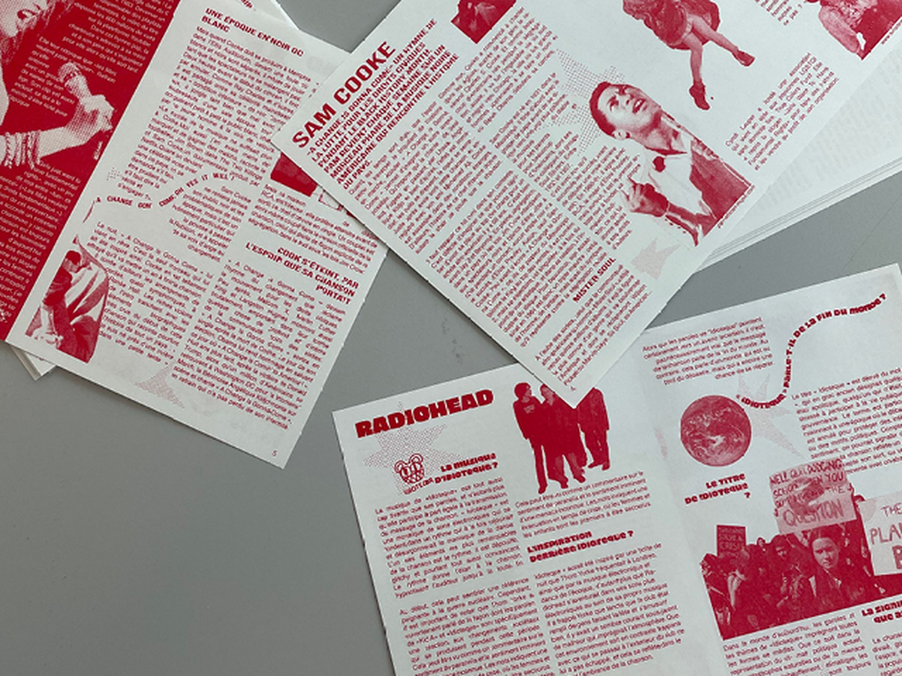
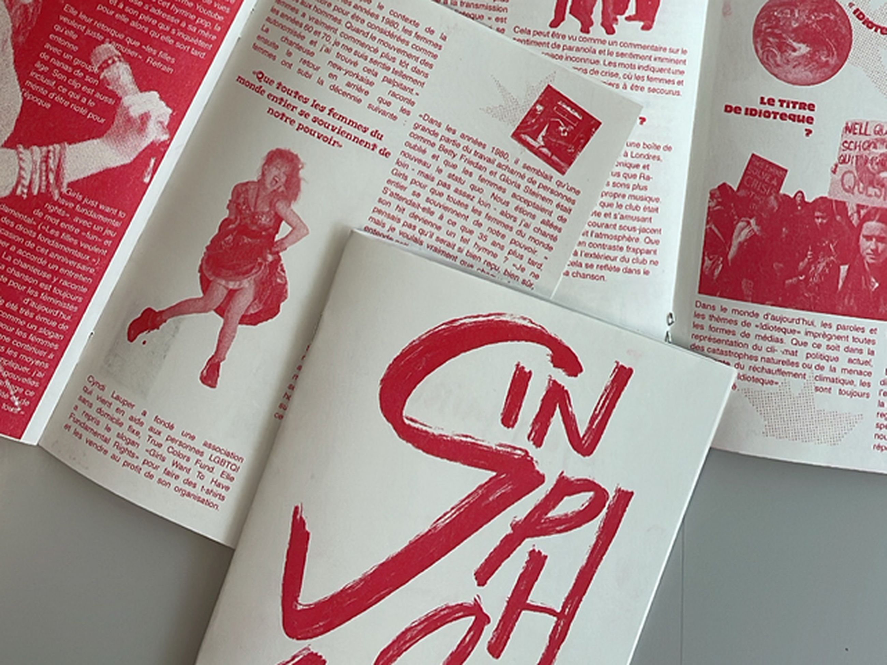
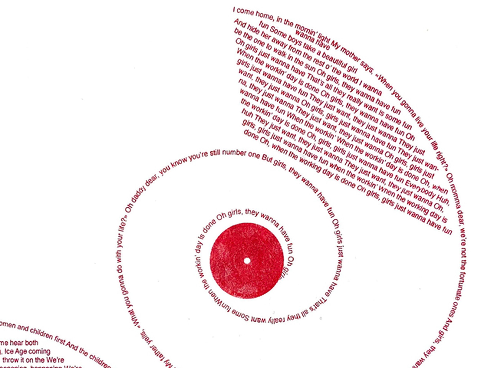
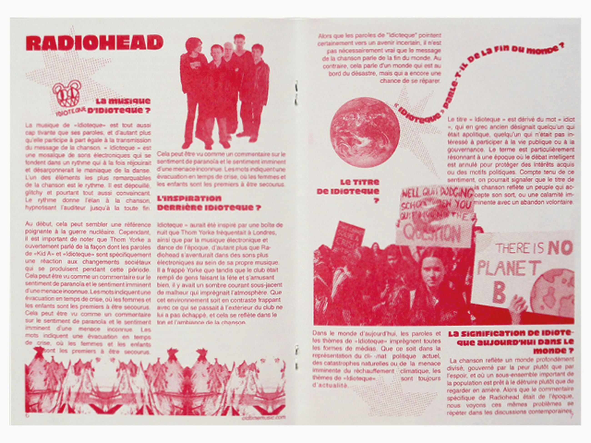
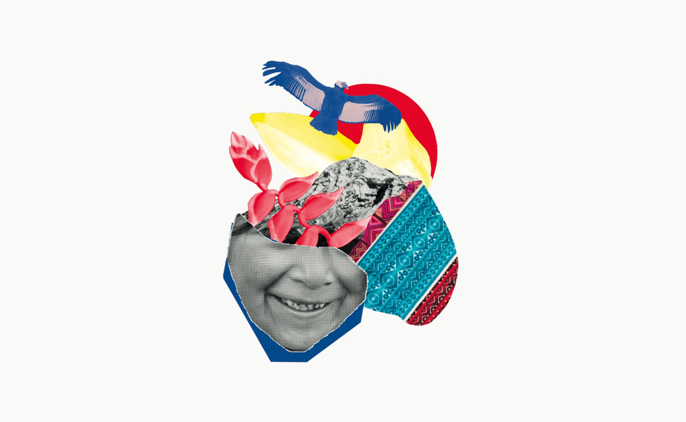

Traiter l’urgence par la représentation de trois artistes engagés et d’un de leurs morceaux parlant d’un sujet actuel. Le racisme en Amérique, le changement climatique et l’émancipation de la femme étaient les thèmes que nous voulions aborder sous la forme d’une urgence, quelque chose d’important où il faut vite y remédier. Finalisation
sous forme de petite revue A5, en risographie.




